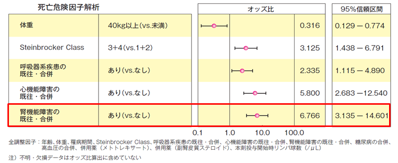

腎障害患者への投与
- ●腎障害患者に対する薬物動態の検討結果により、腎機能障害の程度でアクテムラの薬物動態に影響を及ぼさなかったことから、投与量の調整は必要はない
- ●ただし、全例調査（点滴静注用）における死亡症例の危険因子解析結果では「腎機能障害の既往・合併」が危険因子のひとつとして認められているため、患者の状態を定期的にモニタリングし、副作用の発現に注意をすること
【全例調査（点滴静注用）死亡症例35例における、多重ロジスティク回帰分析を用いた危険因子解析結果】

【全例調査（点滴静注用）死亡症例35例における、多重ロジスティク回帰分析を用いた危険因子解析結果】